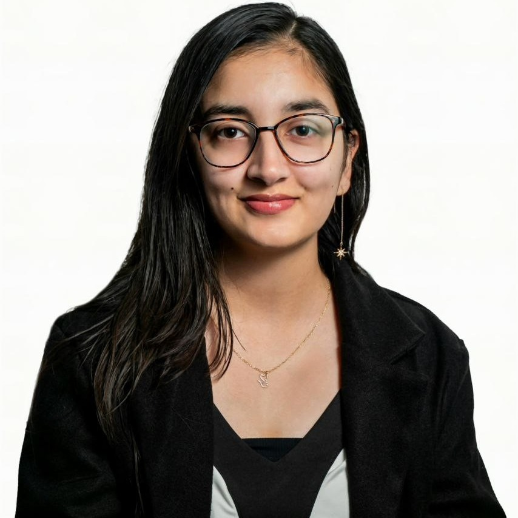

Cognitive Behavioural Therapy
Spotting the thoughts that keep you stuck and learning to shift them.
Think less "lie on a couch and talk about your childhood" and more "let's figure this out and actually do something about it." This is your safe space, and you'll leave with tools, not just insight.

Something I hated in my own journey was being left marinating in the awareness of why I am the way I am, with nothing to actually do about it.
Share anything on your mind. I'm not going to leave you floating in your trauma without any tools.
We do that part together.
Especially if you feel you're being a bit too much like your mom.
🙃 it happens to the best of usThe kind where you just need someone to understand, not someone telling you to set boundaries.
wow, surprise! your therapist can cuss.You know, those parts of yourself you've been hiding in the basement.
If it's part of your story, we'll go there when you're ready, and not a minute before.
I split my week between schools, where I work with students, and adults who look like they have it all together. You know the type. Maybe you are the type.
I especially love working with people from culturally diverse backgrounds, first- and second-generation immigrants, and anyone caught between two (or more) worlds.
tick whatever feels true
I mix and match based on what you need, and I always start with your strengths. I'm here to be your biggest cheerleader, because we could all use one.
Spotting the thoughts that keep you stuck and learning to shift them.
Practical tools for big emotions, stress and relationships.
Drawing and creating when words aren't enough.
Using body movement to shake off stress and regulate.
A longer out-breath than in-breath tells your body it's safe to slow down. In for 4, hold for 2, out for 6. Do a few rounds whenever your chest feels tight.
This is the kind of thing we practise in sessions, then you keep using between them.
I absolutely believe in therapist shopping. Investing your time, energy and money in one person only to realise they're not the right fit is fucking draining. So we do a vibe check first.
Come with your questions. Not sure what to ask? Use mine.
Online sessions, 30 or 60 minutes, whichever suits you. We'll sort out the rhythm on the call, weekly or fortnightly.
How this works, confidentiality, what's brought you here and what you'd like to get out of it.
you don't have to tell me everything on day onePatterns, family stuff, shadow work, past trauma if and when you're ready, plus tools and things to practise between sessions.
Every few sessions we look at what's working and what isn't. Change pace, shift focus, take a break or wrap up. You're never locked in.
(yes, I'll prepare my answers beforehand 😆💁♀️)
Book your free 20-minute vibe check. No pressure, no sales pitch.
Book on TopmateRather write first? Email me at Ashu@listeningstoriesuntold.com